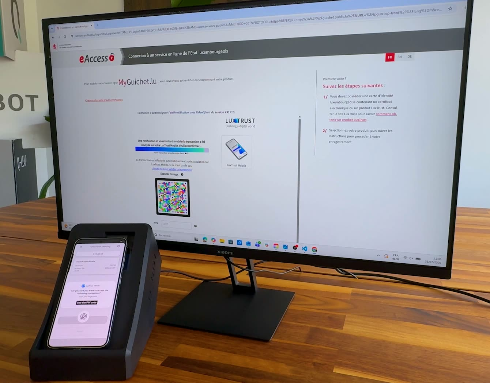

From your test pipeline
A single HTTP request when the test reaches the 2FA step. Explicit, deterministic, easy to integrate into any pipeline.
GET /scenarios/:id/execute- No API key, no agent to install
Q-Bot automates LuxTrust two-factor authentication in Luxembourg, as well as other systems internationally. Its electronics, software and interface were designed together, by testers, at Q-Leap, a software testing specialist since 2012.
Q-Bot is built to order, in a compact format that sits next to a keyboard. Every module, the device under test included, is integrated into this format, designed for the testers' working environment, without cluttering their desk.

The nano computer that drives the device, in detail:
Scenarios are built in a standalone web application, directly on screenshots of the mobile app. No development skills are required.

The Q-Bot web interface lets any tester create a scenario in minutes. No scripting, no XPath selectors, no brittle element IDs.
The result is a reusable, named scenario: a visual map of what to tap and when, ready to be triggered on demand from any test pipeline.
Q-Bot is driven from its web interface, or by an HTTP call from your test pipeline.

Every scenario in Q-Bot is accessible via a simple REST API. No SDK, no proprietary plugin, no agent to install in your CI environment.
One call from your pipeline, or none at all: the companion app fires the moment a 2FA notification reaches the device.
A single HTTP request when the test reaches the 2FA step. Explicit, deterministic, easy to integrate into any pipeline.
GET /scenarios/:id/executeThe Q-Bot companion app runs right on the device under test and watches for 2FA notifications. The moment one is detected, it triggers the matching scenario automatically.
Both paths can coexist in the same environment: use whichever fits each scenario. Either way, taps reach the phone over ADB, Android's standard tool for driving a device connected by USB. The loop alongside shows the gesture: the notification arrives, the scenario plays, the phone screen changes.
Q-Bot is designed to respect the privacy and security of your test data.
Scenarios and their step images stay on the Q-Bot device. No cloud uploads, no data leaving your environment.
Q-Bot must be used with test data, not production data. Scenarios created remain on the device.
Q-Bot runs on your internal network. Communication between Q-Bot and your test tools stays local.
In case of malfunction, Q-Leap support intervenes remotely.
Q-Bot integrates into your existing test pipeline, whatever technology you use.